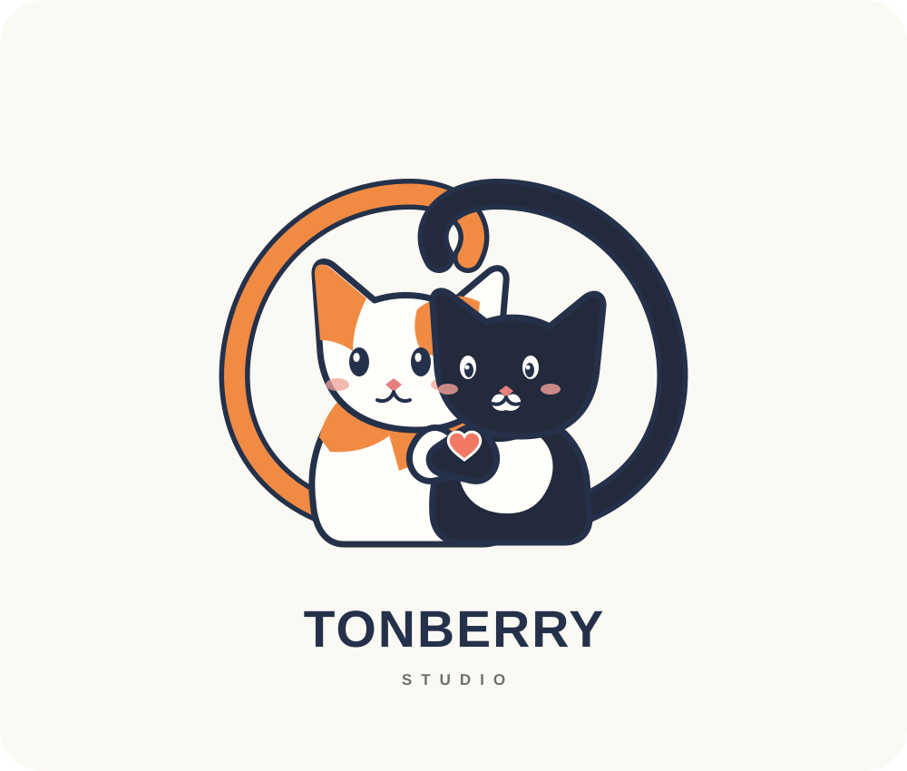
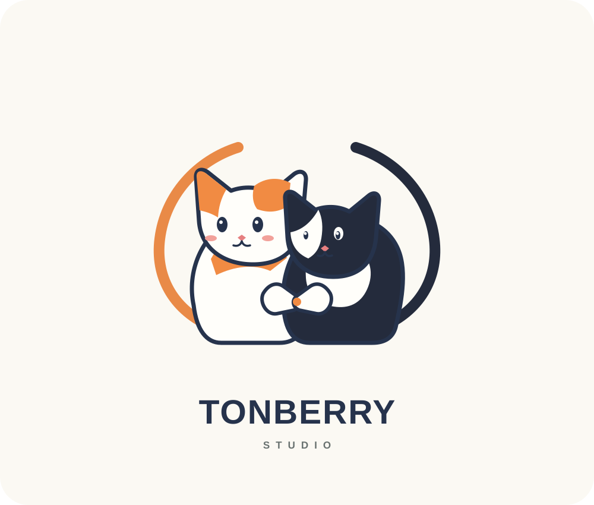
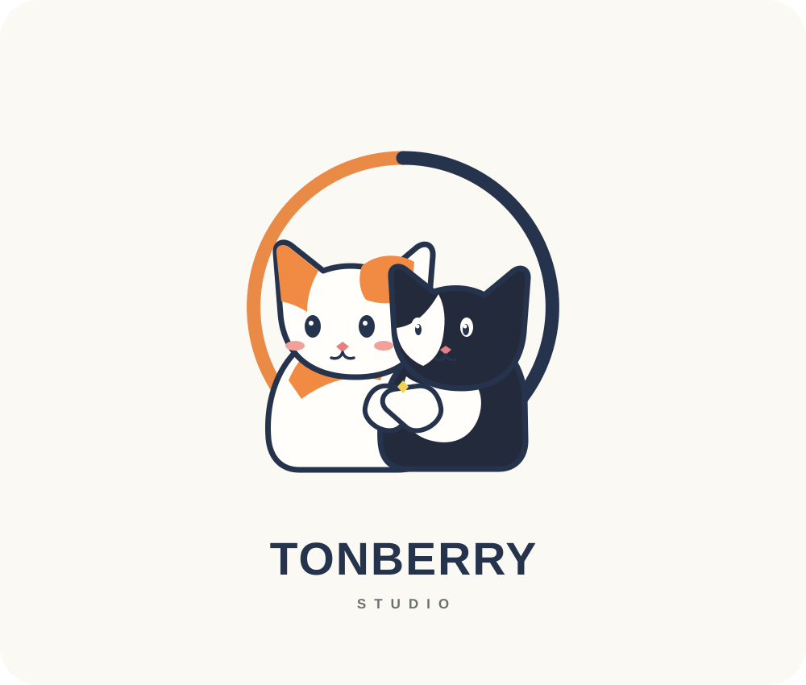

A · Tail-made circle
The tails complete the round shape; the paws meet in the middle.
All three keep the same core idea: your larger white-and-orange cat and the smaller tuxedo cat, curled into a round composition and reaching their paws toward each other.

The tails complete the round shape; the paws meet in the middle.

A closer cuddle, with their bodies forming a shared nest.

A clearer high-five moment inside an open, simple circle.
Concept artwork based on your description. Photos of the cats can help refine the orange patches, tuxedo markings, and expressions.